Események
| Téli alpesi szakképzés febr 28 szombat - márc 7 szombat |
| Alapfokú sziklamászó tanfolyam márc 26 csütörtök 18:00 |
| 1%, FTSK Excelsior SE máj 14 csütörtök 21:00 |
| Vizsga Oszolyon máj 17 vasárnap |
| Nyári Alpesi szakképzés júl 5 vasárnap - júl 12 vasárnap |
Login
Mélykék jégesés

|
|
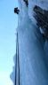Deepest Blue WI6- 150m, Erlaufboden (Hintere Tormäuer), 2009. január 24. Az Annaberg környéki völgykatlan a (Budapestrõl) leggyorsabban elérhetõ jégmászóhelyek közé tartozik — legalábbis tartósan hideg teleken, ugyanis tengerszint feletti magassága csak 650m. Az odavezetõ patakmenti ösvényrõl több egyhosszas kettes-hármas jeget is látunk, végül jobbra letérve a fák mögött megpillantjuk az "igaziakat", a katlan ötös-hatos útjait.
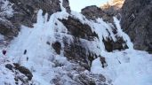 Választott utunk, a Deep Blue az elsõ nittelt standig 35 méteren
hármas, majd 25 méteren négyes. A következõ hossz elsõ 25 métere ismét csak
kettes-hármas, majd jobbra ágazik 4+-ért, újabb 25 méteren. Érdekesebb azonban
direkt változata, ugyanis egyenesen is tovább lehet mászni egy jégcsapon
6--ért — ez a Deepest Blue.
Blue Box, balra a Deep Blue
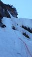 Bálint elõz 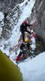 A jégcsap idén egybefüggõ, így esélyesnek tûnt — persze csak a 4+-os
kerülõ kimászása után terveztük. Az útba azonban nem mi szálltunk be elõször.
A szlovákok elsõ két hosszát Bálint egybõl oldotta meg, így hamar megelõztük
õket, hátulmászójuk pedig azt is türelmesen megvárta, hogy Dinának és Jankának
berakjunk oroszba egy kötelet. A következõ hosszban már nem akadályoztuk volna
egymást, a szlovák elölmászó mégis hangot adott reményének, hogy mi a direktet
másszuk. Eredetileg könnyebb úton akartam volna tesztelni, hogy egyáltalán
milyen is az (elöl) egyfogú hágóvas — korábban ugyanis csak kétfogúakkal
másztam —, de másfél óra alvás és négy óra vezetés kissé tompává tett,
az elágazásnál pedig egyértelmû volt, hogy melyik a gradiensirány. Csak akkor
ébredtek kételyeim, amikor közelebb értem — mi van, ha mégsem elég a
60m? Standoljak? A nittelt stand csak ereszkedéshez van jó helyen és különben
sem ízlett a gondolat, hogy csak egy hármast másszak és a nehézség megint
Bálintra jusson. Az a szempont csak halványan merült fel, hogy a jelenlegi,
fél kötélhosszal lejjebb levõ standról biztosítani se lehet jól, esés esetén
túl sokat nyúlna a kötél. (Úgysem esek!) Visszatraverzáltam az egybefüggõ
részhez és elindultam felfelé.
Elsõ stand
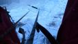 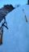Deepest Blue 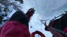
Nem is lenne nehéz, ha nem kéne csavarni... Már a harmadiknál tartok,
ezzel különösen sokat kell küzdeni. Sajnos nem az én jól bevált lézer
szonikom, hanem Bálint kedvencei közül való — csak sokadik próbálkozásra
harap a jégbe és ezt is csak egy bemélyedésben tudom elérni, ahol viszont a
bazinagy kurblija akad el. Nem is csavarom be teljesen, csak hogy
biztonságosan belepihenhessek. A függõleges szakasz vége közelinek tûnik, innen
úgyis egyben kinyomom. Nekiindulok. Minden ütéssel fogy az erõm, de elérem a
függõleges tetejét, ahol egy kevésbé meredek jégtáblát találok. Kezdenék
fellélegezni, de még korai. A jobb csákánnyal már inkább kapirgálok, mint
ütök, a kezem kezd lecsúszni a markolatról. A lépés se túl jó, szokatlan még
az egyfogú. Talán a bal kezemben még bízhatok, de a csákányt feljebb kéne
beütni.A harmadiknál A jobb kezembõl minden erõ elszáll... De nem hagy el, mert együtt szárnyalunk, egyre gyorsulva, fejjel lefelé. Ütõdés a bal könyökömön, meg egy erõ, ami visszahúz és megállít. A kötélen lógok, az ég újra felül. A jobb kezem üres, a balban egy csákány, meg a fájdalom a könyökömben. Amint magamhoz térek, elsõ reakcióként lekiabálok Bálintnak, hogy eresszen le. A takarásból persze nem hallja és rögtön rá is jövök, hogy nem elég hosszú a kötél. Átveszem jobb kezembe a csákányt, eltámolyognék balra; egy szintben vagyok a kihagyott standponttal, de ráébredek, hogy az még mindig nincs jó helyen. 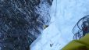 Eltraverzálok
a jobb szélre, ott standolok két megmaradt csavarommal.
Közben alul megjelenik a szlovák srác, õ látja a másik csákányomat, a
jégben maradt 10-12 méterrel feljebb. Jó, akkor (szinte) minden
rendben! Fél kézzel felbiztosítom Bálintot.
Nem érzem, hogy mikor feszül a kötel, hiszen felettem még három
köztesen megy
át és csak onnan le. Egy kis szerencsétlenkedés után rájövök, hogyan
tudom
fél kezemmel hatékonyabban ráncigálni a kötelet. Bálint felbukkan 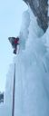 6- 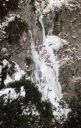 a felsõ standból 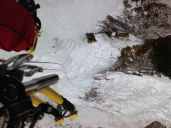 Bálint felér hozzám,
megegyezünk abban, hogy innen már csak biztosítani fogom, követni nem. A
nehezén gyorsan túljut — a harmadik csavaromig oroszban, fölé pedig még
berak egy sajátot. Eléri a csákányomat, de még ezután is meglepõen sok van
hátra — úgy tûnik, hogy ha túljutottam volna a függõlegesen, akkor is
szükség lett volna egy közbülsõ standra. Bálint végül feljut —
sikerült!
lefelém
Az ereszkedéstõl elõre félek, bal kezemmel ugyanis minimális erõt tudok csak kifejteni, még a csomózás és bogozás is fájdalmas. A jégcsap alatti ereszkedõstandban elér minket a szlovák srác. Megemlíti, hogy milyen jó találmány a mellbekötõ, mert megakadályozta volna, hogy átforduljak a levegõben. Eddig igaz is, de kétes, hogy hágóvassal lefele jobban jártam volna-e. Ha két közelmúltbeli balesetre és elszenvedõik mankóira gondolok, meg arra, hogy én most tízszer annyit estem, mint õk, akkor örülök, hogy nekem "csak" a könyököm és nem a hágóvasam akadt a jégfalba. Bal karomban merevednek az izmok, de a pruszikot még tudom tartani, így az ereszkedés lényegi része alig lassul, a kötelekkel való vacakolás meg elsõsorban Bálintra marad. Bénázásaim ellenére hamarabb leérünk, mint a szlovákok az utolsó ereszkedõpontba. A következõ nehézség a jeges ösvény, amin sikerül anélkül eljutnom a parkolóig, hogy elcsúsznék és merev karomra esnék. Az operációra három nappal késõbb kerül sor, a singcsontom letört végét rögzítik egy lemezzel és csavarokkal. A vas egy évig marad a karomban.
Szöveg és fotók: Csizmadia Péter (Szöcsi)
|
Még nincs hozzászólás
mXcomment 1.0.5 © 2007-2009 - visualclinic.fr
License Creative Commons - Some rights reserved